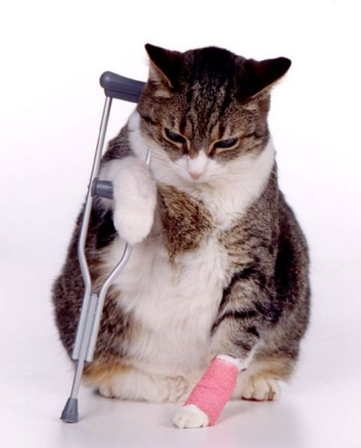
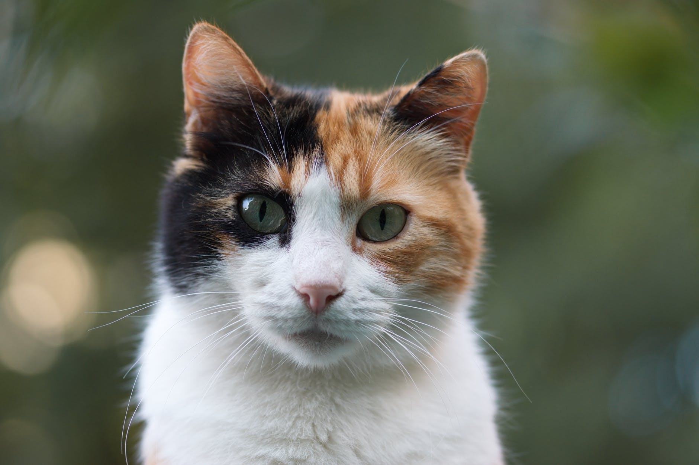
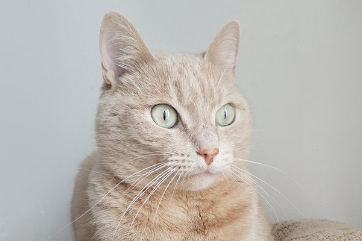
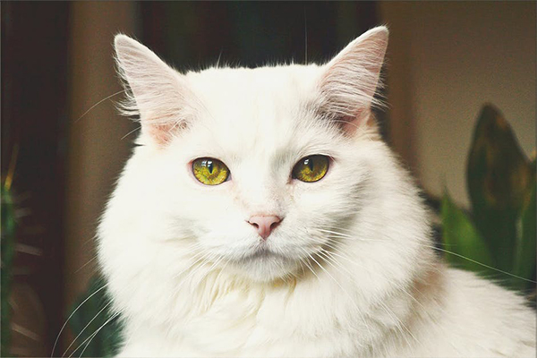
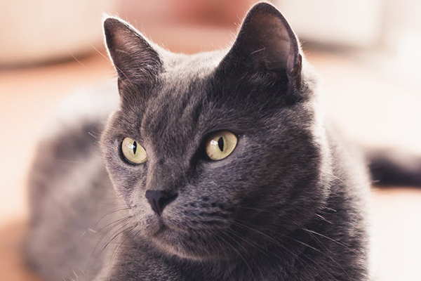
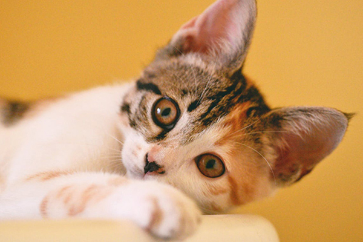
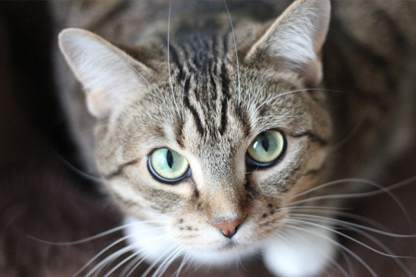

AdoptaUnGatito.com
Esto es AdoptaUnGatito.com, donde la felicidad de los gatitos es lo más importante. Aqui descubrira un lugar donde encontrar a un gran amigo y compañero que le acompañe en su dia a dia y ambos se hagan la vida mucho más feliz .
BIENVENIDOS!
Nuestra primera finalidad es promover el respeto por los animales.
En el ámbito social: facilitamos información y asesoramiento técnico y jurídico a los distintos agentes sociales sobre protección animal. Dirigimos proyectos de sensibilización que plantean alternativas a los sectores empresariales que directa o indirectamente causan sufrimiento a los animales.
En el ámbito legal: velamos por el cumplimiento de la actual legislación y colaboramos con las autoridades e instituciones para instaurar normativas más respetuosas con los animales.
En el ámbito pedagógico: promovemos acciones formativas que fomenten la empatía y el respeto por los animales en la educación infantil, primaria y en la universidad.
Conciencia
Fomentamos la toma de conciencia sobre el impacto que nuestros hábitos diarios tienen sobre los animales.
Respeto
Consideramos en nuestra acción diaria la diversidad de puntos de vista que existen en la sociedad.
Colaboración
Fomentamos la participación con todas las personas y colectivos que puedan incidir en la mejora de las condiciones de vida de los animales.
Equidad
Promovemos soluciones estratégicas que beneficien a todas las partes implicadas.
EQUIPO


Lily Sanchez
Administración Y RRHH
Mike Rodriguez
Cuidador de gatos

Ayuda para Gantz
Gantz es un gatito de 8 años de edad que sufrio un pequeño accidente por ir a cazar un pajaro desde un 5ºpiso donde vive con su querida dueña de 90 años Mari Loli Suarez la cual es una pensionista que no tiene dinero para costear el largo tratamiento que necesita su querido Gantz, asi que entre todos a ver si podemos echarle una mano y que este hermoso gatito vuelva a poder ir sin muletas de nuevo.
GATITOS EN ADOPCIÓN






CONTACTO
Marie Curie nº 10 Málaga
yoquese@yomimos.com
22222222